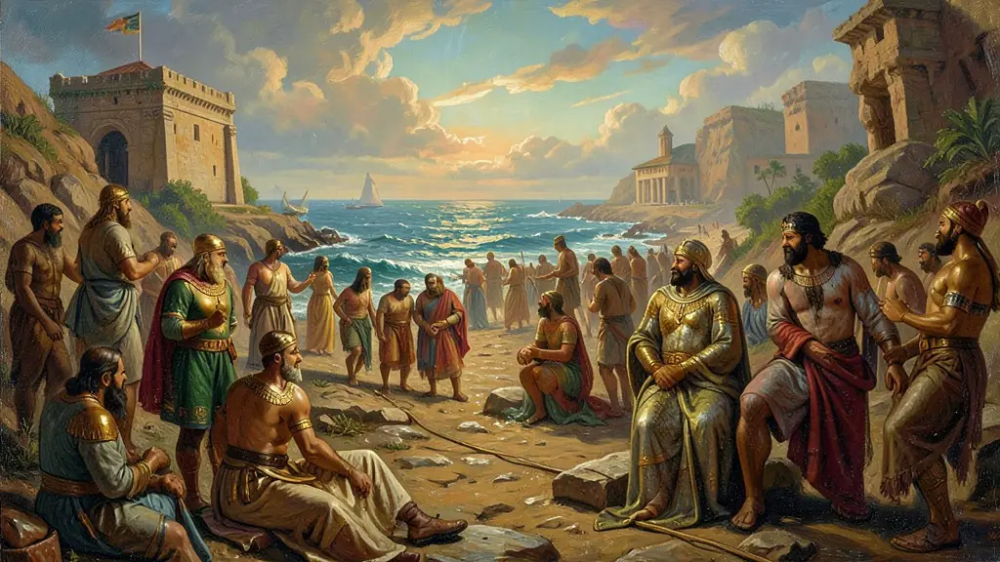
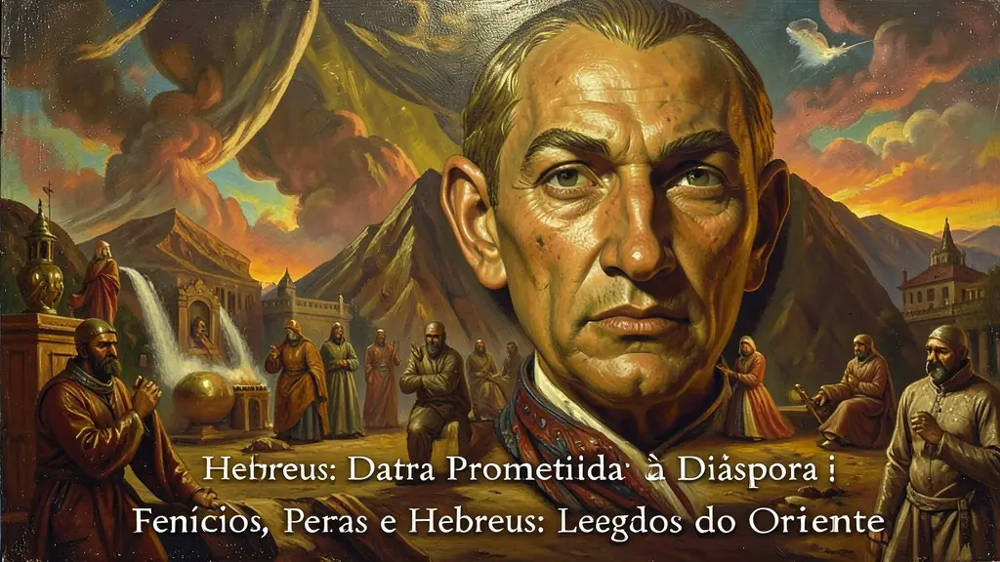
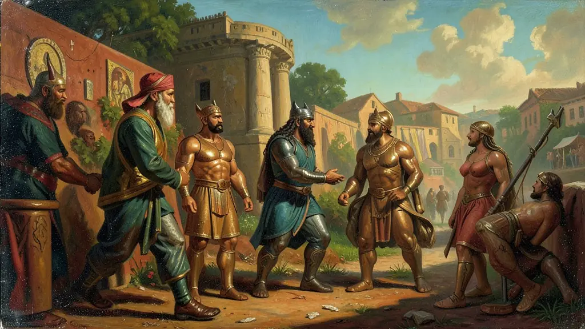

Capítulo 01
1. Fenícios: Os Senhores do Mar e das Letras
Pense nos fenícios como os 'correios do Mediterrâneo'. Eles trocavam tecidos de seda e corante de púrpura em troca de metais e madeira. Como precisavam de rapidez nas contas e contratos, os hieróglifos eram lentos demais. Criaram o alfabeto onde cada letra era um som. Isso permitiu que mercadores aprendessem a ler rápido, algo que antes era luxo de scribas do governo.

Capítulo 02
2. Hebreus: Da Terra Prometida à Diáspora
A história hebraica é uma saga de sobrevivência. Foram escravizados no Egito e libertos por Moisés. No Monte Sinai, receberam os 10 Mandamentos — a primeira lei moral que valia para todos, inclusive para o rei. Quando os Romanos destruíram Jerusalém no ano 70 d.C., os judeus espalharam-se pelo mundo (Diáspora), mantendo sua cultura unida pela fé religiosa.

Capítulo 03
3. Persas: A Máquina Administrativa Perfeita
Dario I foi o maior administrador do mundo antigo. Ele criou as 'Estradas Reais' para que mensagens e exércitos cruzassem o império em dias. Usava espiões reais para garantir que os governadores (sátrapas) não roubassem o povo. Diferente dos assírios cruéis, os persas deixavam os povos conquistados manterem sua língua e religião, desde que pagassem impostos.

Capítulo 04
4. Zoroatrismo: A Luta entre Luz e Trevas
Criada por Zoroastro, essa religião pregava a existência de um deus do Bem (Ahura-Mazda) e um do Mal (Ahriman). O homem tinha o livre-arbítrio para escolher de que lado ficar. Essa ideia de juízo final, céu, inferno e anjos influenciou profundamente o Cristianismo e o Islamismo séculos depois.
Capítulo 05
5. O Comércio e a Moeda na Antiguidade
Enquanto os fenícios trocavam mercadorias (escambo), os persas criaram o **Dárico**, uma moeda de ouro oficial. Isso facilitou o comércio internacional e permitiu a criação de bancos primitivos. O comércio parou de ser regional e passou a envolver todo o mundo conhecido, da Índia à Grécia, unificando os gostos e os mercados globais da época.
Os fenícios, os 'senhores dos mares', desenvolveram uma civilização focada no comércio marítimo que interligou o Mediterrâneo através de uma rede de colônias e feitorias, como Cartago. Sua maior contribuição para a humanidade foi o alfabeto fonético, desenvolvido para agilizar as transações comerciais e simplificar a comunicação escrita, diferenciando-se dos complexos sistemas logográficos egípcios ou cuneiformes. Este alfabeto serviu de base para os sistemas grego e latino, facilitando a democratização da escrita e do conhecimento nas civilizações ocidentais posteriores.
Os persas, sob governantes como Ciro e Dario, construíram um dos maiores impérios da Antiguidade, notável por sua eficiência administrativa e relativa tolerância religiosa. A divisão do império em Satrapias (províncias) governadas por sátrapas e vigiadas pelos 'olhos e ouvidos do rei' permitiu o controle de vastas e diversas populações. Além disso, a religião Zoroatrista, com sua visão dualista entre o bem e o mal, influenciou profundamente as crenças subsequentes, introduzindo conceitos de julgamento final e a luta moral constante que ressoariam no judaísmo e no cristianismo.
Os hebreus introduziram o monoteísmo ético, uma mudança revolucionária em relação ao politeísmo predominante na Antiguidade. A crença em um Deus único e transcendente, cuja relação com o povo era baseada em uma aliança moral (os Dez Mandamentos), fundamentou a identidade judaica no tempo e no espaço, sobrevivendo a sucessivas diásporas e perseguições. Para o Enem, é essencial compreender como o legado desses povos — o comércio fenício, a administração persa e a ética hebraica — formou os pilares sobre os quais a cultura mediterrânea e ocidental se ergueu.
Fonte: AMADOU, J. As Civilizações do Oriente Próximo. São Paulo: Cultrix, 1994.
Atividades interativas
Questões para fixar
O Alfabeto Fonético, criado pelos fenícios há mais de 3.000 anos, tinha como principal objetivo prático:
O império persa utilizava um sistema administrativo eficiente para controlar vastos territórios. Como eram chamados os governadores das províncias persas e qual era sua função principal?
Qual foi a principal contribuição dos Fenícios para a escrita?
Qual foi o impacto do monoteísmo hebraico na cultura cristã e muçulmana posterior?
Qual foi a principal característica do império persa sob Ciro e Dario I?